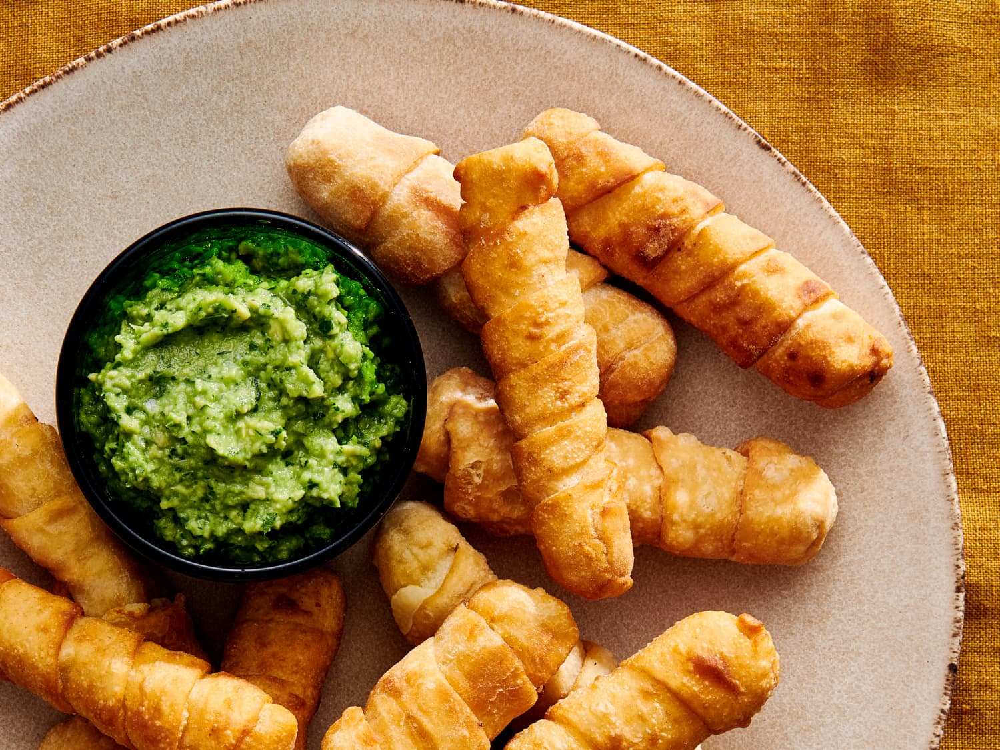

Home
Tequenos

Description
Tequeños are a popular Venezuelan snack made of cheese sticks wrapped in a soft dough and then
fried until golden and crispy. They are often served as appetizers at parties, celebrations, or
as a street food treat. The cheese inside is typically a salty white cheese that melts well,
such as queso blanco or queso llanero. Tequeños are beloved for their crunchy exterior and gooey,
savory center, and they’re commonly enjoyed with dips like guasacaca (a type of avocado sauce) or
sweet sauces like papelón syrup
Ingredients
Dough
- 2 cups all-purpose flour
- 2 tablespoons unsalted butter (softened)
- 1 egg
- 1/4 teaspoon salt
- 1/4 cup water (or as needed)
- Vegetable oil for frying
Filling
- 250 g (about 1/2 lb) firm white cheese (queso blanco, queso llanero, or mozzarella), cut into sticks
Preparation
- In a mixing bowl, combine the flour and salt.
- Add the softened butter and egg, mixing well until crumbly.
- Gradually add water and knead the dough until smooth and elastic (about 5–10 minutes).
- Cover the dough and let it rest for 30 minutes.
- Meanwhile, cut the cheese into sticks about 7–8 cm long and 1 cm thick.
- Roll out the dough on a floured surface to about 2 mm thick.
- Cut the dough into long strips (about 1.5 cm wide).
- Wrap each cheese stick diagonally with a dough strip, sealing the ends well so the cheese doesn’t leak while frying.
- Heat vegetable oil in a deep pan to 175°C (350°F).
- Fry the tequeños in batches until golden brown and crispy (about 2–3 minutes per batch).
- Remove and drain on paper towels.
- Serve warm with your favorite dipping sauce. Enjoy!